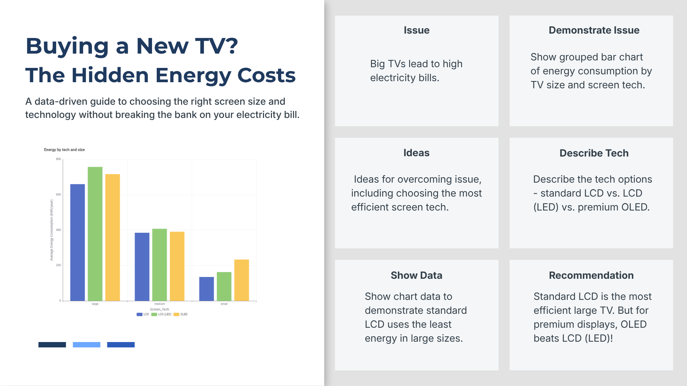
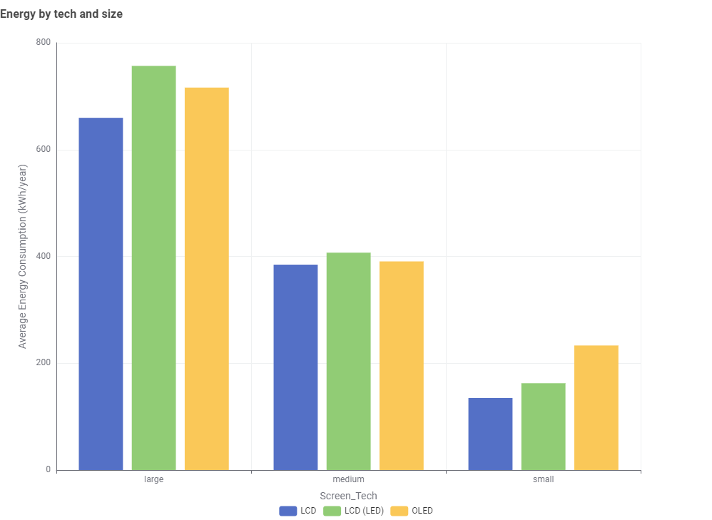

Buying a New TV? The Hidden Energy Costs
A data-driven guide to choosing the right screen size and technology without breaking the bank on your electricity bill.
Our Data Story Plan
The storyboard below outlines how we approach this data story, from identifying the issue to presenting our findings and recommendations.

Figure 1: Storyboard outlining the narrative structure of this data story.
The Problem: Bigger TVs, Bigger Bills
Televisions are one of the most common appliances in Australian households. With screen sizes getting larger every year, many consumers do not realise just how much their TV contributes to their electricity bill.
A large TV left running for several hours a day can consume hundreds of kilowatt-hours per year, adding a noticeable amount to annual energy costs. But how much does size really matter, and does the type of screen technology make a difference?
Energy Consumption by Screen Size and Technology
The chart below compares the average annual energy consumption (kWh/year) of televisions, grouped by screen size (large, medium, small) and screen technology (LCD, LCD with LED backlight, and OLED).

Figure 2: Average annual energy consumption (kWh/year) by screen size and technology. Data sourced from the Australian Energy Rating program.
The data clearly shows that screen size is the biggest factor in energy consumption. Large TVs consume roughly 5 times more energy than small TVs, regardless of the technology used.
Understanding Screen Technologies
Not all TVs are built the same. The three main screen technologies available in the Australian market each have different energy characteristics:
LCD (Standard)
Traditional liquid crystal display with a standard backlight. Generally the most energy-efficient option, especially at larger screen sizes.
LCD (LED Backlit)
Uses LED backlighting for improved brightness and contrast. Slightly higher energy consumption than standard LCD, but offers better picture quality.
OLED
Each pixel produces its own light, delivering excellent contrast and colour accuracy. Energy use varies depending on content, but is comparable to LED-backlit LCD.
What the Data Tells Us
Looking at the chart more closely, several patterns stand out:
- Large TVs (65" and above): Standard LCD uses the least energy at around 660 kWh/year, while LCD (LED) uses the most at around 755 kWh/year. OLED sits in between at roughly 715 kWh/year.
- Medium TVs (50"-64"): All three technologies perform similarly, with energy consumption ranging from about 385 to 410 kWh/year. The differences are much smaller at this size.
- Small TVs (below 50"): Energy consumption is lowest across the board. Standard LCD uses around 130 kWh/year, while OLED uses the most at around 230 kWh/year in this category.
Our Recommendation
If energy efficiency is a priority, here are some practical tips for choosing your next TV:
- For the most energy-efficient large TV, standard LCD is the clear winner. It uses significantly less power than both LED-backlit LCD and OLED at larger screen sizes.
- If you prefer a premium display with better picture quality, OLED is a better choice than LED-backlit LCD. Despite common assumptions, OLED actually consumes less energy than LED-backlit models in the large size category.
- For a medium-sized TV, the technology choice matters less. All three options consume similar amounts of energy, so you can choose based on picture quality and budget.
- Smaller is always more efficient. If you do not need a large screen, a smaller TV will save you the most on your energy bill regardless of the technology.
Beyond choosing the right TV, you can further reduce energy use by lowering screen brightness, using a sleep timer, and turning the TV off at the wall instead of leaving it on standby.
For more detailed energy ratings and comparisons, visit the Australian Energy Rating website.